Análise de Performance - NoSQL (MongoDB)
Resumo Bancos Relacionais
- Armazenam dados na forma de tabelas (linhas e colunas);
- As tabelas se relacionam;
- Usam SQL como linguagem de consulta;
Resumo Bancos NoSQL
-
Não são relacionais
As relações não são obrigatórias mas podem ocorrer, isso torna os bancos NoSQL mais performáticos em grandes volumes de dados.
-
Possuem diferentes modelos/formas de armazenamento de dados
Enquanto os bancos SQL armazenam os dados nas formas de tabelas (linha e coluna) os bancos NoSQL tem outras formas de armazenar. Alguns desses modelos são: Grafos, Documentos, Colunas e Chave-Valor
-
Esquemas de dados flexíveis
Dentro de um mesmo conjunto de dados eles podem possuir formatos diferentes, por exemplo: nos bancos orientados a documentos podem possuir dentro de uma mesma coleção documentos com diferentes propriedades.
Principais tipos de Banco de Dados NoSQL
- Colunas: mais próximos dos bancos relacionais. Armazenam dados em formas de colunas no lugar de linhas, as colunas podem ter subcolunas que possuem propriedades.
- Chave-valor: se assemelham a um dicionário. Cada dado tem uma chave que o identifica e o seu valor que contém
- Grafos: grafos são estruturas de dados que possuem vértices e arestas em que as arestas interligam os vértices. Nos bancos de dados os vértices e arestas representam os dados e as relações existentes.
- Documentos: armazenam os registros em formas de documentos, normalmente JSON ou XML.
SQL vs NoSQL
Dificuldades para modelar bancos complexos de forma relacional
Ex.: Redes sociais (possuem comentários, videos, imagens, marcações, entre outras coisas)
Esquemas rígidos
x
Esquemas flexíveis
Diferenças para escalar
As bases de dados SQL são verticalmente escaláveis, o que significa que para aumentar o carregamento em um servidor é necessário melhorar o hardware.
As bases de dados NoSQL , por sua vez, são horizontalmente escaláveis. E possivel suportar mais tráfego adicionando mais servidores na sua base de dados NoSQL.
Quando usar cada um?
Banco SQL
Bancos SQL são uma boa escolha negócios que vão se beneficiar de sua estrutura e esquema pré-definidos. Por exemplo, aplicações que requerem transações de várias linhas — como sistemas de contabilidades ou sistemas que monitoram inventário — ou rodam em sistemas legados
Banco NoSQL
Os bancos NoSQLsão uma boa escolha para negócios que têm crescimento rápido ou bases de dados sem definições claras de esquemas. Se você não conseguir definir um esquema para o seu banco de dados, se perceber que está sempre desnormalizando esquemas de dados ou se o seu esquema passa constantemente por mudanças — como costuma ser o caso de apps mobile, análises em tempo real, sistemas de gerenciamento de conteúdo.
Análise de Performance
Criando o banco
Gerando documento (valores)
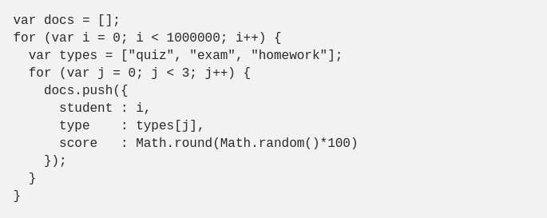Gerando documento (valores)

Inserindo valores na coleção Scores
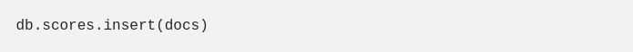 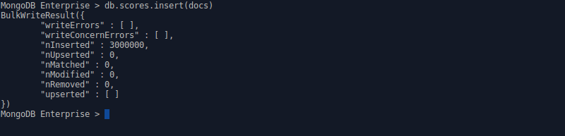Fazendo a primeira busca (para teste)
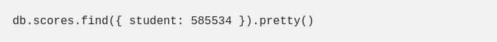 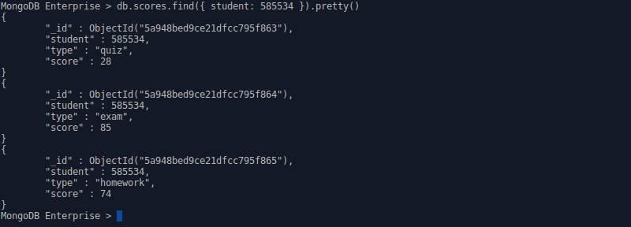Verificando tempo de busca SEM index
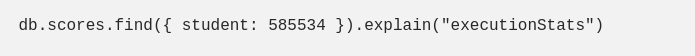
Criando index
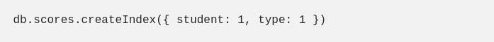 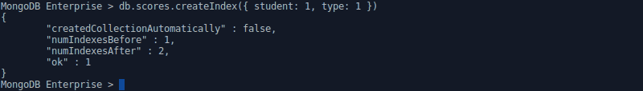Verificando tempo de busca COM index
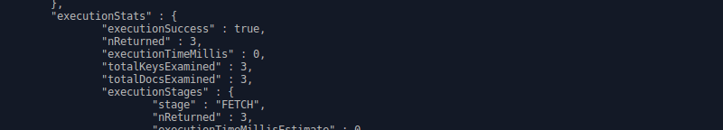Indexado vs Não Indexado
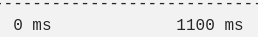Tamanho do arquivo index
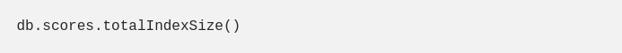 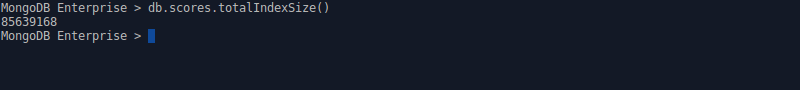(81.67 MB) de index